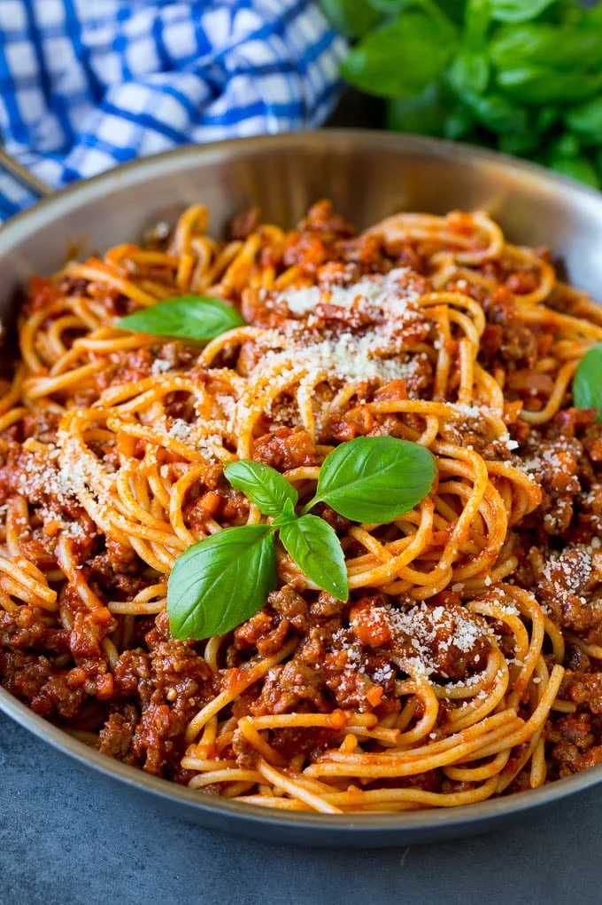

Pasta Bolognese voor 2personen

Ingrediënten
- 120g rundergehakt
- 160g fijn gehakte tomaten
- 6g tomatenpuree
- 12g ui (fijngesneden)
- 1/2 teentje knoflook (fijngesneden)
- 1 wortel (in blokjes)
- gersaspte Parmezaanse kaas
- zout
Bereiding
- Snijd alle groente zoals aangegeven en verhit een flinke scheut olijfolie in een hapjespan.
- Fruit de ui in een paar minuten op een middelhoog vuur tot deze glazig is. Voeg nu de wortel en bleekselderij toe en smoor deze al roerend tot het zacht wordt.
- Verhoog het vuur en voeg het gehakt toe. Roer het met een houten spatel tot het licht bruin wordt.
- Voeg de tomaten, tomatenpuree en de kruiden. Sluit het deksel en laat 10 minuten zachtjes koken. Breek of duw met de spatel de tomaten fijn zodat er een saus ontstaat.
- Laat tot 30 minuten zachtjes borrelen, af en toe roeren tot de Bolognese saus de gewenste dikte heeft. Hoe langer hoe lekkerder.
- kook nu de pasta in gezout water voor 10min.
- Giet water weg en meng de pasta samen met de saus
- Serveer met geraspte kaas voor de lekker en een blaadje basilicum voor de show.